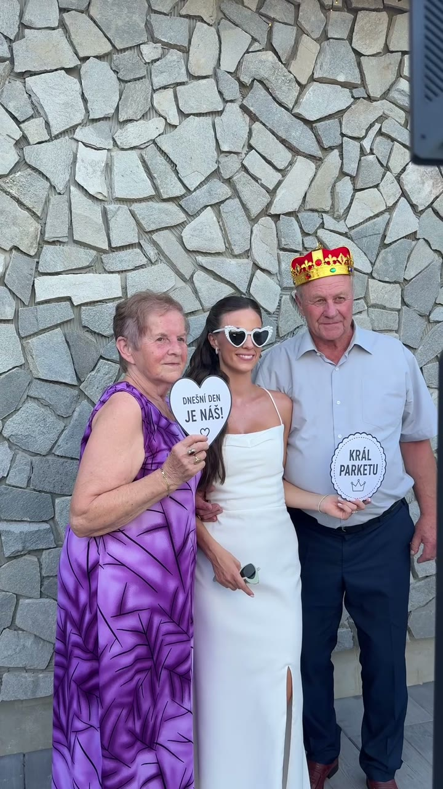
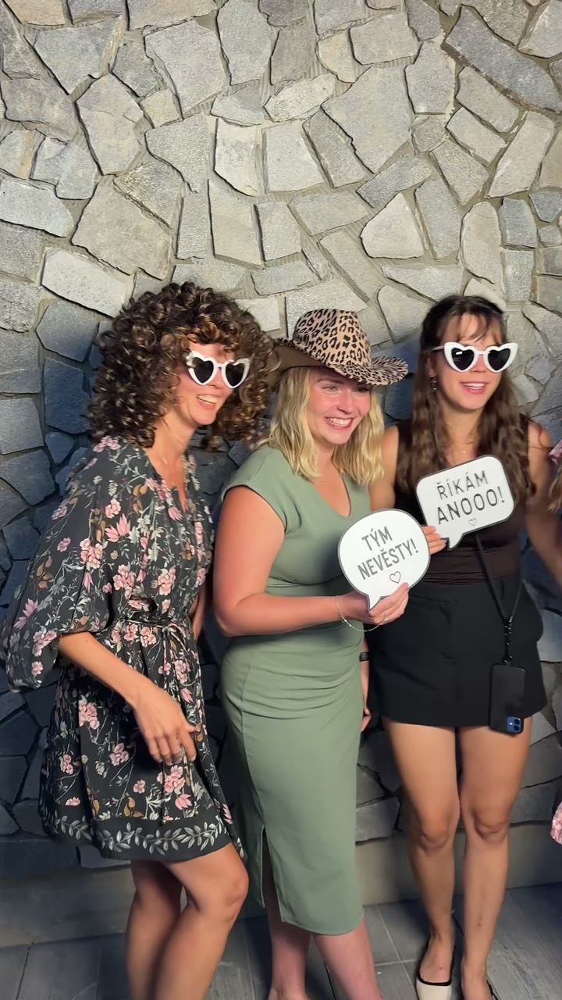

Sladíme detaily
Potvrdíme si termín, místo, čas focení, vzhled fotek, pozadí i vaše přání.
Selfíbudka na svatbu
Zatímco si užíváte svůj den, Selfíbudka se postará o spontánní zábavu mezi hosty. Ti si odnesou vytištěnou fotografii a do vašeho fotoalba přidají další snímek spolu s osobním vzkazem. Vám navíc zůstane digitální galerie plná momentů, které by jinak možná nikdy nevznikly.
Zábava pro všechny generace
Prarodiče, svědci, kamarádi i novomanželé. Selfíbudka přirozeně propojí hosty a vytvoří prostor pro spontánní fotografie bez nuceného pózování.
Začít můžete hned po hostině a pokračovat až do večerní zábavy. Rekvizity vybíráme tak, aby seděly atmosféře svatby, a výstupní grafiku sladíme s vašimi barvami, jmény i datem.


Jsme připravení od prvního cvaknutí
Hosté se vyfotí a během několika sekund drží svou vzpomínku v ruce.
Jména, datum, barvy i motiv přizpůsobíme oznámení nebo výzdobě.
Společně vybereme variantu, která zapadne do stylu vašeho dne.
Hostům poradíme a dohlédneme, aby všechno běželo hladce.
Po svatbě dostanete všechny fotografie přehledně pohromadě.
Vaše představa, naše péče
Potvrdíme si termín, místo, čas focení, vzhled fotek, pozadí i vaše přání.
Selfíbudku přivezeme, sestavíme, otestujeme a nachystáme pro první hosty.
My se postaráme o provoz i o hosty. Po akci vše uklidíme a předáme digitální galerii.
Nejčastější otázky
Každá svatba je jedinečná. Konkrétní průběh i nabídku proto ladíme podle vašeho dne.
Nejčastěji po hostině, kdy se program uvolní a hosté mají chuť se bavit. Čas přizpůsobíme harmonogramu svatby.
Ano. Do návrhu zapracujeme vaše barvy, jména, datum i motiv oznámení, aby každý výtisk působil jako součást svatby.
Ano. Ovládání je jednoduché a u Selfíbudky je obsluha, která hostům ráda pomůže.
Nabídku připravíme podle termínu, místa, délky focení a zvolených doplňků. Stačí nám poslat základní informace o svatbě.
Další typy akcí
Nezávazná svatební poptávka
Pošlete nám základní informace. Ozveme se s dostupností a nabídkou připravenou pro vaši svatbu.